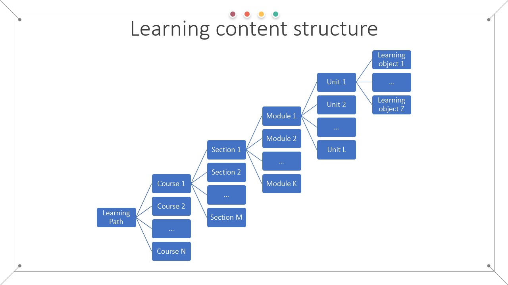

FAIR Skills & Principles
To be able to successfully design FAIR learning objects an instructional designer must expand the traditional skill set with additional FAIR related skills. Using these newly acquired skills, the instructor can then incorporate additional actions in the backward instructional design process in order to produce FAIR-by-design learning objects.
Thus, becoming familiar with the FAIR principles and their implementation is an essential step in the Prepare stage of the FAIR-by-Design methodology. For the purposes of instructional design, the FAIR principles are applied to FAIR learning objects that represent the main digital objects used in learning/training activities.
Learning Objectives
- Describe the FAIR-by-Design instructional design skills
- Summarize the FAIR guiding principles
- Define FAIR learning objects
- Determining FAIRness of learning objects
Target Audience
- attendees of the FAIR-by-Design ToT live webinar
Duration
30 mins
Prerequisites
none
Learning Tools
- Training BBB room
- Browser
- Menti access or BBB quiz interaction
FAIR Instructional Design Skills
The skills required to start producing FAIR learning materials can be divided into two groups: - FAIR oriented skills - Expertise in advocacy and promotion of the FAIR guiding principles - Expertise in curating and sharing FAIR data enabling - Efficient application of the concept of metadata - Choosing and implementing metadata schema with accompanying controlled vocabularies and ontologies - Understanding the concept of storing and indexing digital objects - Use of persistent identifiers (PIDs) for digital objects - Use of repositories or learning management systems and storing platforms - Legal expertise to be able to recognize, define and combine - Intellectual Property Rights - Licensing - Attribution and citing of learning materials and other resources - Traditional instructional design oriented skills - Technical expertise in - Different tools and formats used for creation and delivery of learning content and their interoperability - Use of versioning during the creation and maintenance of different types of materials and resources - Good communication, collaboration and research skills that will support the process of - Co-creation, - Sharing, - Finding and reuse of learning materials, and - Implementation of best practices and other related policies - Learning experience design - Ensuring effective learning by using the magic triangle of learning - learning objectives - training activities - assessment methods
FAIR guiding principles
The ‘FAIR Guiding Principles for scientific data management and stewardship’ are published in Scientific Data in 2016. The main goal of this work is to provide guidelines on how to improve the - Findability, - Accessibility, - Interoperability, and - Reusability of digital objects.
One of the main points is enabling FAIR not only from human, but also machine perspective, enabling automated actions on various digital objects.
As digital learning materials are a type of digital objects, the general FAIR principles can also be applied to them. Note that the FAIR principles refer to three entities: - the digital object - the metadata (information that describes the digital object), and - the infrastructure that stores or indexes the digital object (e.g. repository and catalogue).
|Metadata|A set of data that describes and gives information about other data.| |---|
Findable
To ensure a digital object is findable - the object should be accompanied with sufficiently detailed descriptive metadata - a unique and persistent identifier (PID) such as a digital object identifier (DOI) should be used to point to the digital object.
|PID|A persistent identifier (PI or PID) is a long-lasting reference to a document, file, web page, or other object.| |---|
Accessible
For the digital object to be accessible - the metadata and the object content should be understandable to both humans and machines, and - the digital object should be stored in a trusted repository. - clear authentication and authorization procedures should be defined and outlined - although the access to the digital object can be restricted, the access metadata should always be open
|Authentication|The process or action of verifying the identity of a user or process| |---|
|Authorization|To give official permission for something to happen, or to give someone official permission to do something| |---|
Interoperable
The digital object is considered interoperable if - the metadata should follow a commonly accepted metadata schema combined with agreed-upon controlled vocabularies - formal, accessible, shared, and broadly applicable language(s) and format(s) should be used for the digital object representation
|Controlled vocabulary|A carefully selected list of words and phrases, which are used to tag units of information| |---|
Reusable
To be reusable a digital object should have - a clear usage license - accurate information on provenance.
|License|Formal or official permission to do something| |---|
|Provenance|A record of ownership of a work of art or an antique, used as a guide to authenticity or quality| |---|
More information about the FAIR principles and the general FAIRification process can be found on the GOFAIR website.
FAIR Learning Objects
When applying the FAIR guiding principles to learning materials there are several aspects that need to be considered.
Perspective
Are the learning materials FAIR from a learner perspective or from the trainer/instructor perspective, or both? Using the FAIR-by-design methodology we aim to make the learning materials FAIR from both perspectives.
This means that we aim to make the learning materials FAIR for both learners and other trainers and instructional designers.
Granularity
What is the level of granularity when applying the FAIR principles? Should the course be FAIR as a whole, or should each course module be FAIR on its own?
The highest granularity level where we can apply the FAIR principles is the level of the learning object.

|FAIR learning object|Any FAIR digital resource that supports learning developed around a single learning objective| |---|
We define a FAIR learning object as any FAIR digital resource that supports learning developed around a single learning objective. At the very core of this approach is the idea that the learning object, accompanied with suitable descriptive metadata, can be used as a common building block for the development of more complex learning content by reusing it, re-purposing it, and potentially revising it.
The best practice is to define a learning object as a package of: - concrete learning outcome - lesson plan - lesson content - one or more activities - assessment - facilitation guide.
Characteristics of FAIR learning objects
- Findable – the learning object is the lowest hierarchical level of findability of learning materials in the EOSC ecosystem and is thus the lowest hierarchical level that can be described with metadata and catalogued
- Accessible – the full scope (content, tools and implementation resources) of the learning object should be accessible to both learning producers and consumers in the EOSC ecosystem
- Interoperable – with a well-chosen scope (content, tools and implementation resources), the learning object can be consumed on multiple platforms
- Re-usable – each learning object can be put in a wider context based on the specific learning requirements of a particular aggregate course, unit or module in the EOSC ecosystem.
In summary: - Learning objects are digital - Learning objects contain learning content and information on tools and implementation resources - Learning objects have an explicit learning objective - Learning objects tend to be, but are not necessarily, small or granular in nature - Learning objects tend to be, but are not necessarily, disassociated from context - Learning objects are stored in a repository - Learning objects are described using a metadata specification - Learning objects are findable by searching a catalogue - Learning objects are interoperable in that they can be used in multiple learning environments - Learning objects are reusable by both other instructors and learners - Learning objects can be repurposed for different learning contexts - Learning object are composable into aggregates.
Assessing FAIRness of learning materials
Take the time to do a short exercise that aims to explore the understanding of the FAIR learning objects characteristics.
For each of the provided examples of learning materials, one should individually decide whether they are F+A+I+R from learners and from trainers/instructional designers perspective.
Example learning materials: - https://opensciency.github.io/sprint-content/ and https://zenodo.org/record/7662732 - https://www.ebi.ac.uk/training/online/courses/covid-19-data-portal/#vf-tabs__section--overview - https://www.markdownguide.org/
As strict definitions are still lacking while doing this assessment, the FAIRness is assessed based on the general understanding of the concepts of FAIR and learning objects. Thus, all opinions are valid as long as they relate to the listed FAIR learning objects objective.
Summary
Think about: - What information is missing to make the material FAIR? - On what granularity level have you assessed the FAIRness? - What type of detailed information is needed so that you can perform a real FAIR assessment?
Get more detailed information on the activity.
Suggested Reading
- Wilkinson, M., Dumontier, M., Aalbersberg, I. et al. The FAIR Guiding Principles for scientific data management and stewardship. Sci Data 3, 160018 (2016).
- OECD, Giving Knowledge for Free, The Emergence of Open Educational Resources, 2007
- Wiley, The Instructional Use of Learning Objects, 2002
- Balatsoukas P, Morris A, O'Brien A. Learning objects update: Review and critical approach to content aggregation. Journal of Educational Technology & Society, 11(2):119-30, 2008.